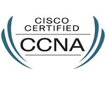

The OCP, Java SE 7 Programmer certification is designed for individuals who possess a strong foundation in the Java Programming language as well as proven skill in creating Java technology programs. This certification covers core Application Programming interfaces used to design object-oriented applications with Java, as well as insight into Java applications such as those that manipulate files, directories and file systems.
Successfully completing the requirements of this certification track earns the designation of Oracle Certified Professional, Java SE 7 Programmer. This certification differentiates candidates in the marketplace by providing a competitive edge through proven expertise. Up-to-date training and field experience are recommended..
Cisco Certification

The Cisco Certified Internetwork Expert (CCIE) is widely recognized as one of the most difficult to obtain (and expensive) IT certifications. Like the MCSE/MCA, it's a vendor-sponsored certification, focusing on Cisco's products.
The CCIE requires that you pass both a written exam and a hands-on lab. To sit for the written exam, you must pay $300 and choose from one of several tracks: Routing and Switching, Security, Storage Networking, Voice, and Service Provider.
You must pass the written exam before you're eligible to take the lab exam. This is an eight-hour hands-on test of your ability to configure and troubleshoot Cisco networking equipment and software. The lab exams cost $1,250 each. This does not, of course, include travel expenses that may be necessary since the labs are conducted only in certain locations.
As if all that weren't enough, you don't get to rest on your laurels after obtaining the certification. CCIEs must recertify every two years or the certification is suspended.